ATATÜRK ORTAOKULU
5 . SINIFLAR ARASI
MATEMATİK BİLGİ YARIŞMASI

SORU 1: Yukarıda verilen ışının sembollerle gösterimi aşağıdakilerden hangisi olamaz?
A) [KL B) [KM C) [KN D) [ML
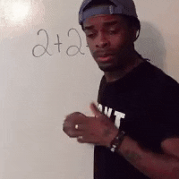
SORU 2: Aşağıdaki kareli zeminde [KL çizilmiş ve bazı noktalar belirtilmiştir.
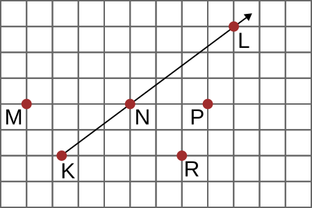
Daha sonra Sinan, bu zemine [MP'nı çizmiştir.
Buna göre aşağıdakilerden hangisi oluşan açılardan biridir?
A) $\angle{LPM}$ B) $\angle{LMN}$ C) $\angle{PNL}$ D) $\angle{KNR}$
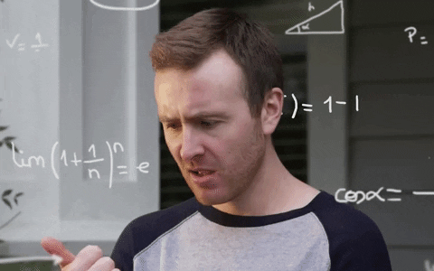
SORU 3: “Yukarıda O merkezli çember verilmiştir.”
|AO| = 8 cm ise |BC| kaç santimetredir?
A) 4 B) 8 C) 12 D) 16
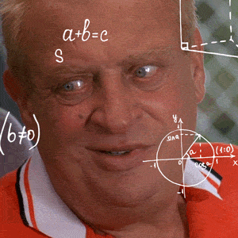
SORU 4: Aşağıda verilen harflerden hangilerinde hem paralel hem de dik doğru parçaları bulunur?
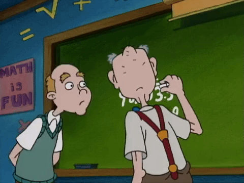
SORU 5: Aşağıdaki kareli zeminde verilen AB doğrusuna D ve C noktalarından dikme çizilecektir.
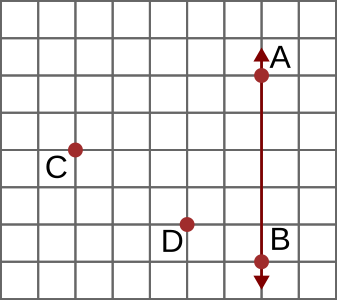
D noktasından çizilen dikmenin uzunluğu 8 cm olduğuna göre C noktasından çizilen dikmenin uzunluğu kaç santimetredir?
A) 12 B) 16 C) 20 D) 24
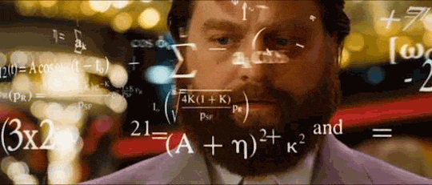
SORU 6: Yukarıda verilen şekle göre aşağıdakilerden hangisi doğrudur?
A) $m(\angle{AOC})=40°$ B) $m(\angle{BOD})=75°$
C) $m(\angle{AOD})=135°$ D) $m(\angle{BOE})=120°$

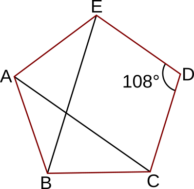
SORU 7: Yukarıda verilen ABCDE düzgün beşgeni ile ilgili aşağıdakilerden hangisi yanlıştır?
A) |AB|=|BC| B) [AC] beşgenin köşegenidir.
C) $m(\angle{ABC})=108°$ D) ACD beşgenin iç açısıdır.
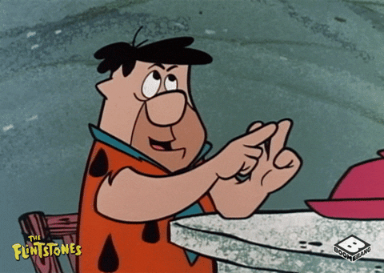
SORU 8: 50 sayısı beş defa yan yana yazılarak bir doğal sayı elde ediliyor.
Buna göre elde edilen doğal sayının okunuşu aşağıdakilerden hangisidir?
A) Beş milyar elli milyon beş yüz beş bin elli
B) Elli milyar elli milyon elli bin elli
C) Beş milyar beş yüz beş milyon elli bin beş yüz elli
D) Beş milyar elli milyon elli bin beş yüz beş
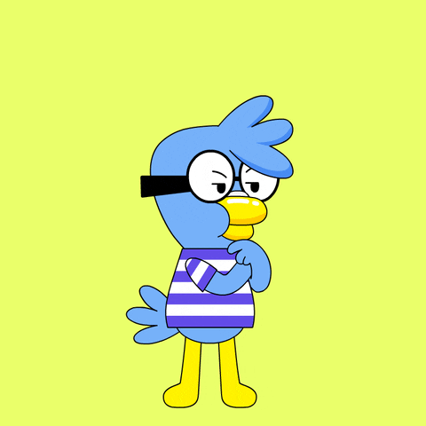
SORU 9 : Aşağıda bir mağazada satılan üç ürünün etiket fiyatları verilmiştir.
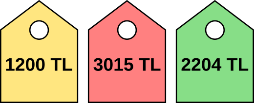
Buna göre aşağıdakilerden hangisi bu ürünlerden iki tane satın alan birisinin ödediği toplam tutar olamaz?
A) 3404 B) 4215 C) 4404 D) 5219

SORU 10: Yukarıda verilen rakamlarla en fazla birer kez kullanılarak yazılabilecek en küçük sekiz basamaklı doğal sayının on binler basamağındaki rakam kaçtır?
A) 4 B) 5 C) 6 D) 7
SORU 11: Yukarıdaki şekilde kaç tane doğru parçası vardır?
A) 11 B) 10 C) 9 D) 8

SORU 12: Yukarıda verilen şekilde kaç tane açı vardır?
A) 3 B) 4 C) 5 D) 6
SORU 13: Aşağıda doğrusal üç yol gösterilmiştir.
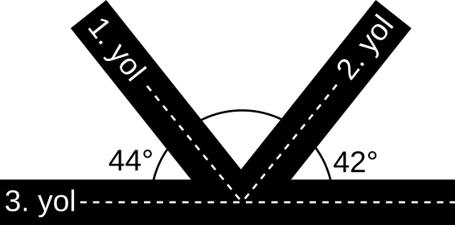
Yukarıdaki şekilde 1.yol ile 3.yol arasındaki açı 44°, 2.yol ile 3.yol arasındaki açı 42° dir.
Buna göre 1.yol ile 2. yol arasındaki açının ölçüsü kaç derecedir?
A) 94° B) 92° C) 90° D) 88°

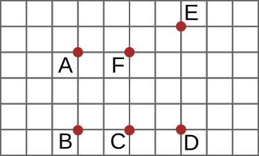
SORU 14: Yukarıda kareli zeminde verilen hangi üç nokta birleştirilirse ikizkenar dik üçgen elde edilir?
A) A, B, C B) A, B, D C) B, C, F D) B, D, E